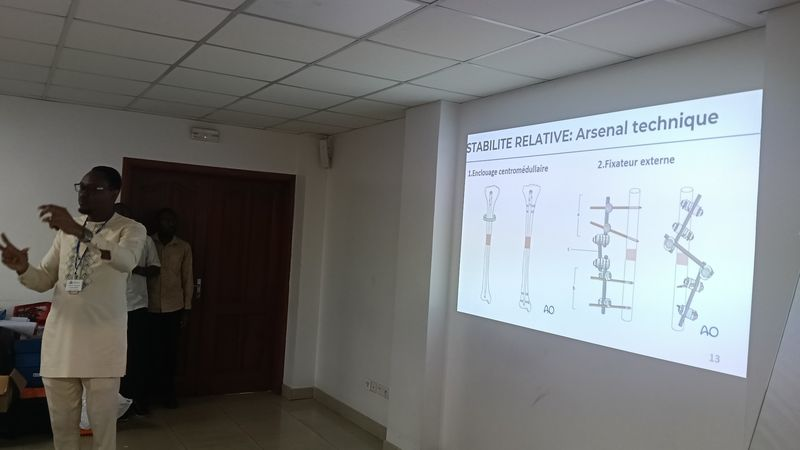
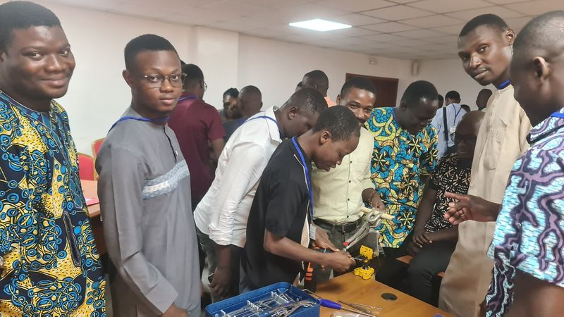
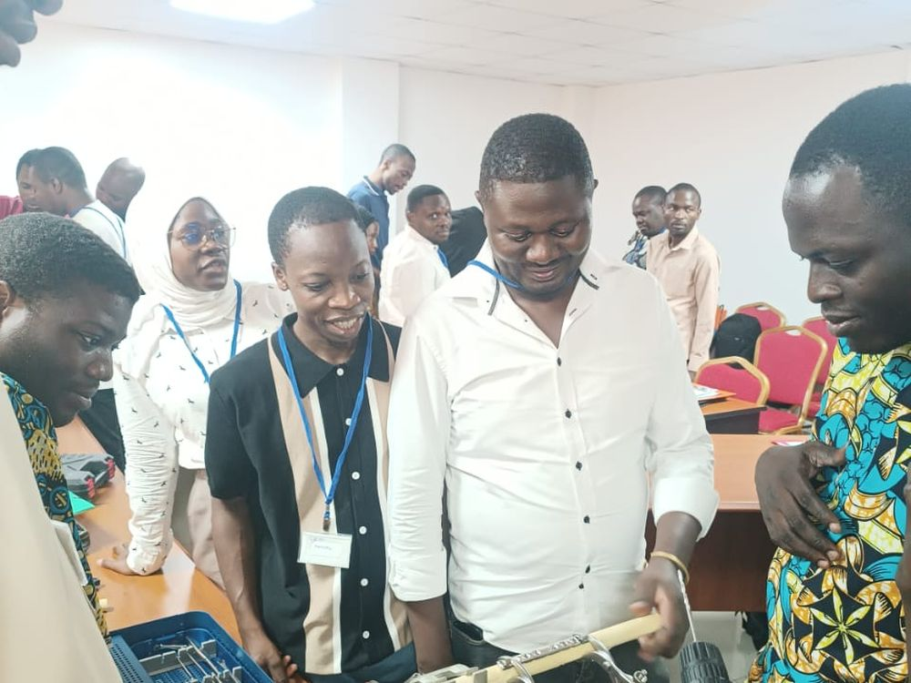

Événements AO Alliance au Cameroun
Les séminaires, cours et ateliers organisés au Cameroun avec l’AO Alliance. Chaque ligne porte les dates, la ville, le public visé et l’état des inscriptions.
Aucun événement ne correspond à ces critères.
Trois formats de session

Séminaire de traumatologie
Une à deux journées sur un thème précis : cas cliniques, discussions et démonstration sur modèle osseux.

Cours pour personnels de bloc
Stérilisation, instrumentation, préparation du patient et maintenance du matériel d’ostéosynthèse.

Atelier pratique
Travaux pratiques encadrés : voies d’abord, réduction, choix et pose de l’implant sur modèle osseux.
Les autres zones du réseau
L’AO Alliance organise des sessions dans plusieurs zones. Celles qui concernent les membres de l’association sont regroupées sur trois pages dédiées.
Afrique francophone
Les sessions tenues dans les pays francophones de la région, au titre du mandat de l’association pour l’Afrique francophone.
Afrique anglophone
Les sessions tenues dans les pays anglophones du continent, ouvertes aux membres sur dossier.
Asie
Les sessions du réseau AO Alliance en Asie, mentionnées à titre d’information et de comparaison des pratiques.
Accueillir une session dans votre hôpital
Les sessions sont organisées à la demande d’un service ou d’une direction, sous réserve d’un groupe suffisant et d’un espace de démonstration.